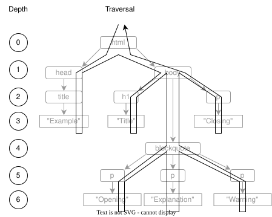

We generate HTML pages to report experiments
Want to be sure they have the right structure so that people can get information out of them reliably
Learning how to do this prepares us for checking code
HTML documents contain tags and text
An opening tag like <p> starts an element
A closing tag like </p> ends the element
If the element is empty,
we can use a self-closing tag like <br/>
Opening and self-closing tags can have attributes
key="value" (with some variations)Tags must be properly nested:
<a><b></a></b> is illegal
The object that represent these make up the Document Object Model (DOM)
Real-world HTML is often messy
Use [Beautiful Soup][beautiful_soup] to parse it
Nodes are NavigableString (for text) or Tag (for element)
Tag nodes have properties name and children
from bs4 import BeautifulSoup, NavigableString
doc = BeautifulSoup(text, "html.parser")
display(doc)
text = """<html>
<body>
<h1>Title</h1>
<p>paragraph</p>
</body>
</html>"""
node: [document]
node: html
string: '\n'
node: body
string: '\n'
node: h1
string: 'Title'
string: '\n'
node: p
string: 'paragraph'
string: '\n'
string: '\n'
def display(node):
if isinstance(node, NavigableString):
print(f"string: {repr(node.string)}")
return
else:
print(f"node: {node.name}")
for child in node:
display(child)
Text nodes don't have children
for child in node loops over children of element nodes
A dictionary node.attrs
Can be single-valued or multi-valued
def display(node):
if isinstance(node, Tag):
print(f"node: {node.name} {node.attrs}")
for child in node:
display(child)
text = """<html lang="en">
<body class="outline narrow">
<p align="left" align="right">paragraph</p>
</body>
</html>"""
node: [document] {}
node: html {'lang': 'en'}
node: body {'class': ['outline', 'narrow']}
node: p {'align': 'right'}
What kinds of children do elements have?
<tr> (table row) should only appear inside <table> or <tbody>Recurse through DOM tree
def recurse(node, catalog):
assert isinstance(node, Tag)
if node.name not in catalog:
catalog[node.name] = set()
for child in node:
if isinstance(child, Tag):
catalog[node.name].add(child.name)
recurse(child, catalog)
return catalog
<html>
<head>
<title>Software Design by Example</title>
</head>
<body>
<h1>Main Title</h1>
<p>introductory paragraph</p>
<ul>
<li>first item</li>
<li>second item is <em>emphasized</em></li>
</ul>
</body>
</html>
body: h1, p, ul
em:
h1:
head: title
html: body, head
li: em
p:
title:
ul: li
A visitor is a class that knows how to get to each element of a data structure
Derive a class of our own that does something for those elements
When we recurse, allow separate handlers for entry and exit
class Visitor:
def visit(self, node):
if isinstance(node, NavigableString):
self._text(node)
elif isinstance(node, Tag):
self._tag_enter(node)
for child in node:
self.visit(child)
self._tag_exit(node)
def _tag_enter(self, node): pass
def _tag_exit(self, node): pass
def _text(self, node): pass
pass rather than NotImplementedError
because many uses won't need all these methodsclass Catalog(Visitor):
def __init__(self):
super().__init__()
self.catalog = {}
def _tag_enter(self, node):
if node.name not in self.catalog:
self.catalog[node.name] = set()
for child in node:
if isinstance(child, Tag):
self.catalog[node.name].add(child.name)
Only a few lines shorter than the original
But the more complicated the data structure is, the more helpful the Visitor pattern becomes
with open(sys.argv[1], "r") as reader:
text = reader.read()
doc = BeautifulSoup(text, "html.parser")
cataloger = Catalog()
cataloger.visit(doc.html)
result = cataloger.catalog
for tag, contents in sorted(result.items()):
print(f"{tag}: {', '.join(sorted(contents))}")

body:
- section
head:
- title
html:
- body
- head
section:
- h1
- p
- ul
ul:
- li
class Check(Visitor):
def __init__(self, manifest):
self.manifest = manifest
self.problems = {}
def _tag_enter(self, node):
actual = {child.name for child in node
if isinstance(child, Tag)}
errors = actual - self.manifest.get(node.name, set())
if errors:
errors |= self.problems.get(node.name, set())
self.problems[node.name] = errors
def read_manifest(filename):
with open(filename, "r") as reader:
result = yaml.load(reader, Loader=yaml.FullLoader)
for key in result:
result[key] = set(result[key])
return result
manifest = read_manifest(sys.argv[1])
with open(sys.argv[2], "r") as reader:
text = reader.read()
doc = BeautifulSoup(text, "html.parser")
checker = Check(manifest)
checker.visit(doc.html)
for key, value in checker.problems.items():
print(f"{key}: {', '.join(sorted(value))}")
body: h1, p, ul
li: em
Because content is supposed to be inside a section tag,
not directly in body
And we're not supposed to emphasize words in lists